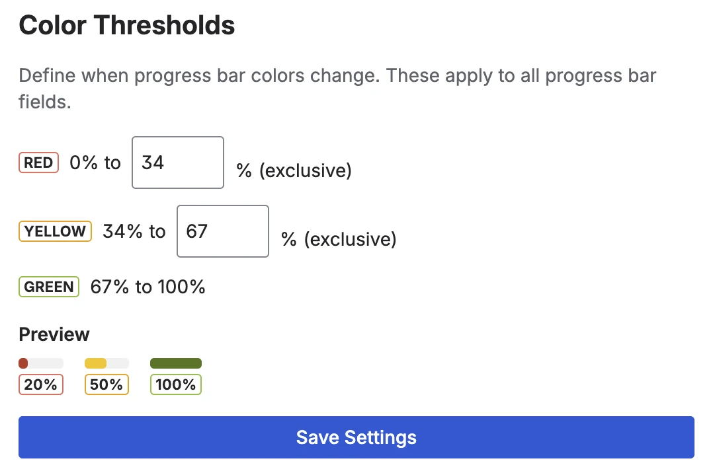

Why teams avoid progress tracking in Jira
Teams that want progress visibility in Jira often hit the same wall: every path to automation involves complexity. A calculated custom field needs a formula. A scripted field needs someone to write and maintain Groovy code. A JQL-based gadget needs the right query syntax. And workflow post-functions need an admin who understands how the transition engine works.
So most teams skip it entirely. They rely on status columns and mental arithmetic during standups. They know it's not ideal. They just don't want to own a scripted solution that breaks every time a workflow is edited.
There's a simpler path: a dedicated progress bar custom field that reads Jira's native data — subtask completion, workflow status — and displays it as a visual percentage. No scripting. No formulas. No maintenance burden.
Quick answer: A Forge-native custom field app adds progress bars to Jira issues with a UI-only setup. Status-based and subtask-based fields update automatically. The manual field needs no configuration at all.
Three approaches, zero scripting required
Visual Progress Tracker provides three field types, each representing a different way to answer "how complete is this issue?" — none of which requires writing code:
Progress Bar (Manual)
The simplest option. A team member opens an issue and sets the percentage themselves using a slider or a set of quick-select buttons: 0%, 10%, 25%, 50%, 75%, or 100%. No configuration required — the field works immediately after it's added to the project screen.
The value persists until someone changes it. Best for tasks where completion is subjective or follows milestones that don't map cleanly to subtask counts or workflow statuses.
The manual field in edit mode — slider plus quick-select preset buttons, no setup required
Progress Bar (Status)
Maps each Jira workflow status to a percentage. When an issue moves from "In Progress" to "In Review", the bar advances automatically — zero extra clicks for the team. The configuration is a one-time admin task: open the Status Mapping tab, assign a number to each status name, and save.
The app ships with a sensible default mapping that works for most Scrum and Kanban workflows out of the box:
- To Do / Backlog → 0%
- Selected for Development → 25%
- In Progress → 50%
- In Review → 75%
- Done / Closed → 100%
You can add, edit, or remove any status. The matching is case-insensitive, so "in progress", "In Progress", and "IN PROGRESS" all resolve to the same value.
Progress Bar (Subtasks)
Calculates resolved child issues ÷ total child issues automatically. No configuration needed — the field reads Jira's own subtask and child issue data. Ideal for epics with stories or stories with subtasks. The field also shows the raw count alongside the bar (for example "3/5 done") and includes a Details button that expands a per-child breakdown.
Configuring status mappings — the UI way
If you use the status-based field, the one configuration step is setting up your status-to-percentage mapping. This is done entirely through a visual admin interface — no code, no post-functions, no Groovy.
The Status Mapping tab shows all your current mappings sorted by percentage value. You can edit any percentage directly, remove statuses you don't need, and add new ones using a text field and a number input. Changes take effect immediately after saving.
The Status Mapping admin UI — enter a percentage for each workflow status, save once, update automatically forever after
Custom workflows: If your project uses non-standard statuses like "Awaiting Deployment" or "UAT", just add them to the mapping. The matching is case-insensitive, so typos in status names won't cause silent failures.
Color thresholds — a UI with live preview
By default, the progress bar color follows a traffic light pattern: red below 34%, yellow up to 67%, green above. These thresholds are configurable in the Color Settings tab — also entirely through a UI.
You set two numbers: the red-to-yellow boundary and the yellow-to-green boundary. A live preview shows exactly how the bar colors will look before you save. If your team's definition of "at risk" is anything below 50%, you change one number and the new thresholds apply everywhere — the issue view, the list view column, and the dashboard gadget.

Color Settings tab — set the red and yellow thresholds and see a live preview before saving
Setup in two minutes
-
1Install Visual Progress Tracker from the Atlassian Marketplace. Free trial available.
-
2Create the field. Go to Jira Settings → Work items → Fields → Create field. Search for "Progress Bar" and choose the type that fits: Manual, Status, or Subtasks. Give it a name and click Create.
-
3Add it to your project screen. Go to Project Settings → Screens → Edit screen and drag the field to your preferred position. It now appears on every issue in that project.
-
4(Status field only) Check the status mapping. Open App Settings → Status Mapping. The default mapping covers the most common workflow statuses. Edit any value or add your custom statuses if needed.
-
5Done. Open any issue to see the progress bar. Add the field as a list view column to see progress across all issues at a glance.
That's the full setup for the most common case. There's no post-function to configure, no Groovy to write, no JQL to maintain.
Frequently asked questions
How do I add a progress custom field in Jira without scripting?
Install an app like Visual Progress Tracker for Jira from the Atlassian Marketplace. It provides three ready-made progress bar field types that you configure through an admin UI — no JQL, no scripting, no post-functions. The status-based field updates automatically when issues move through your workflow.
What is the easiest way to track progress in Jira?
The status-based progress field is the lowest-friction option: install the app, create the field, and it updates automatically on every status change. If your workflow uses standard statuses (To Do, In Progress, In Review, Done), the default mapping works without any edits. The manual field is even simpler — no configuration at all, just open an issue and set the slider.
Does Jira have a built-in progress custom field?
Jira Cloud does not include a native progress bar custom field. The built-in field types include text, number, date, and select — but not a visual progress bar that calculates from workflow status or subtask completion. That requires a Marketplace app.
Can I track progress in Jira without writing JQL?
Yes. Status-based and subtask-based fields read Jira's native data automatically — no query language required. The only admin task is mapping status names to percentages through a visual UI. Manual fields need no setup at all. JQL is optional — you can use it in the dashboard gadget filter, but it's not required for the fields to function.
How is this different from a scripted progress field?
A scripted field (for example via a Groovy-based scripting app) is maintained as code in a separate tool. It breaks when workflows change, requires a developer to update, and adds maintenance overhead. A Forge-native custom field app runs on Atlassian's infrastructure, updates automatically from Jira's own data, and is configured entirely through a UI with no code to maintain.
Two minutes to progress bars in Jira
Visual Progress Tracker adds automatic, color-coded progress bars to your Jira issues — no scripting, no JQL, no post-functions. Free trial available, all three field types included from day one.
Try it free on Marketplace →